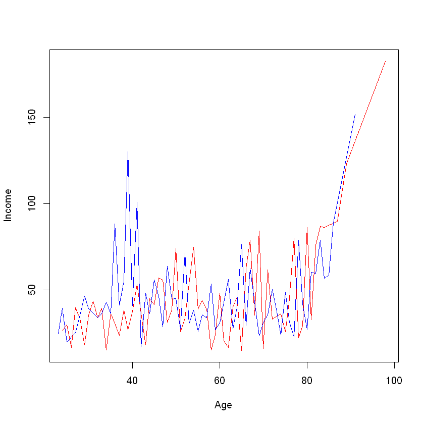

| 10 | 14 | 18 | 22 | 26 |
| 11 | 15 | 19 | 23 | 27 |
| 12 | 16 | 20 | 24 | 28 |
| 13 | 17 | 21 | 25 | 29 |
19 Функції apply()
19.1 Apply functions family
You can use a set of function for manipulating, accesing different data structures such as data.frame, list.
The apply() family pertains to the R base package and is populated with functions to manipulate slices of data from matrices, arrays, lists and dataframes in a repetitive way. These functions allow crossing the data in a number of ways and avoid explicit use of loop constructs. They act on an input list, matrix or array and apply a named function with one or several optional arguments.
The called function could be:
- An aggregating function, like for example the mean, or the sum (that return a number or scalar);
- Other transforming or subsetting functions; and
- Other vectorized functions, which yield more complex structures like lists, vectors, matrices, and arrays.
The apply() functions form the basis of more complex combinations and helps to perform operations with very few lines of code. More specifically, the family is made up of the apply(), lapply(), sapply(), vapply(), mapply(), rapply(), and tapply() functions.
Using of any functions depends on the structure of the data that you want to operate on and the format of the output that you need.
19.1.1 apply()
apply() operates on arrays (2D arrays are matrices).
Syntax is next: apply(X, MARGIN, FUN, ...), where
Xis an array or a matrix if the dimension of the array is 2;MARGINis a variable defining how the function is applied: whenMARGIN=1, it applies over rows, whereas withMARGIN=2, it works over columns. Note that when you use the constructMARGIN=c(1,2), it applies to both rows and columns; andFUN, which is the function that you want to apply to the data. It can be any R function, including a User Defined Function (UDF).
It your turn. TASK. Calculate average value of all rows:
19.1.2 lapply()
lapply() from apply() is:
- It can be used for other objects like
dataframes,listsorvectors; and - The output returned is a
list(which explains the “l” in the function name), which has the same number of elements as the object passed to it.
?lapply to check params of fucntion:
Lets create list of data.frames:
df_a <- data.frame(Value1 = 1:5, Value2 = 101:105)
df_a
df_b <- data.frame(Value1 = 11:15, Value2 = 201:205)
df_c <- data.frame(Value1 = 16:20, Value2 = 301:305)
df_c
lapply(df_a$Value1, sum)| Value1 | Value2 |
|---|---|
| <int> | <int> |
| 1 | 101 |
| 2 | 102 |
| 3 | 103 |
| 4 | 104 |
| 5 | 105 |
| Value1 | Value2 |
|---|---|
| <int> | <int> |
| 16 | 301 |
| 17 | 302 |
| 18 | 303 |
| 19 | 304 |
| 20 | 305 |
- 1
- 2
- 3
- 4
- 5
A data.frame: 5 Value1 Value2 <int> <int> 1 101 2 102 3 103 4 104 5 105 A data.frame: 5 × 2 Value1 Value2 <int> <int> 11 201 12 202 13 203 14 204 15 205 A data.frame: 5 × 2 Value1 Value2 <int> <int> 16 301 17 302 18 303 19 304 20 305
# lets select the 2nd row of each data frame
lapply(list_demo, "[", , 2)
# list_demo - data
# "[" - selection operator
# row index
# col index-
- 101
- 102
- 103
- 104
- 105
-
- 201
- 202
- 203
- 204
- 205
-
- 301
- 302
- 303
- 304
- 305
TASK. Its your turn. Select all 1st rows of dataframes
A data.frame: 1 Value1 Value2 <int> <int> 1 1 101 A data.frame: 1 × 2 Value1 Value2 <int> <int> 1 11 201 A data.frame: 1 × 2 Value1 Value2 <int> <int> 1 16 301
TASK. Its your turn. Select all 1st elements (1st row, 1st col)
You can apply function to all elemetns. Let’s make some names in lowercase
19.1.3 sapplay()
sapply() takes a list vector or dataframe as an input and returns the output in vector or matrix form. Lets use sapply() function in the previous example and check the result.
It tries to simplify the output to the most elementary data structure that is possible. And indeed, sapply() is a ‘wrapper’ function for lapply().
Let’s try to get every 1st element of 2nd row from out list_demo:
A data.frame: 5 Value1 Value2 <int> <int> 1 101 2 102 3 103 4 104 5 105 A data.frame: 5 × 2 Value1 Value2 <int> <int> 11 201 12 202 13 203 14 204 15 205 A data.frame: 5 × 2 Value1 Value2 <int> <int> 16 301 17 302 18 303 19 304 20 305
19.1.4 aggregate()
This function is from package stats. It often used for grouping data by some key. Its from apply family, but working in the same way. So, its good idea discuss it now.
Syntax for data.frame:
aggregate(x, # R object \
by, # List of variables (grouping elements) \
FUN, # Function to be applied for summary statistics\
..., # Additional arguments to be passed to FUN\
simplify = TRUE, # Whether to simplify results as much as possible or not\
drop = TRUE) # Whether to drop unused combinations of grouping values or not.Syntax for formula:
# Formula aggregate(formula, # Input formula \ data, # List or data frame where the variables are stored \ FUN, # Function to be applied for summary statistics \ ..., # Additional arguments to be passed to FUN \ subset, # Observations to be used (optional) \ na.action = na.omit) # How to deal with NA values`
Lets use our credit_data from one of the previous tasks:
ERROR: Error in loadNamespace(x): there is no package called 'ISLR'19.2 Tasks
19.2.1 TASK 1. Calculate average Balance by Gender:
# lets use formula syntax
mean_age <- aggregate(Age ~ Gender, data = credit_data, mean)
mean_age
n <- names(mean_age)
n[n == "Age"] = "Mean Age"
names(mean_age) = n
mean_age| Gender | Age |
|---|---|
| <fct> | <dbl> |
| Male | 55.59585 |
| Female | 55.73430 |
| Gender | Mean Age |
|---|---|
| <fct> | <dbl> |
| Male | 55.59585 |
| Female | 55.73430 |
19.2.2 TASK 2. Average Balance for Gender and Student status at the same time
19.2.3 Task 3
Try get aggregated average Income by Age. Order final dat.frame by age and make a plot().
| Age | Gender | Income | |
|---|---|---|---|
| <int> | <fct> | <dbl> | |
| 1 | 24 | Male | 25.97400 |
| 2 | 25 | Male | 29.56700 |
| 3 | 26 | Male | 16.47900 |
| 4 | 27 | Male | 39.70500 |
| 5 | 28 | Male | 33.01700 |
| 6 | 29 | Male | 17.95850 |
| 7 | 30 | Male | 35.10467 |
| 8 | 31 | Male | 43.52567 |
| 9 | 32 | Male | 33.71150 |
| 10 | 33 | Male | 39.39733 |
levels(group_inc$Gender)
levels(group_inc$Gender) <- c("Male", "Female")
m_data <- group_inc[group_inc$Gender == "Male", ]
nrow(m_data)
f_data <- group_inc[group_inc$Gender == "Female", ]
nrow(f_data)
with(m_data, plot(Age, Income, type = "l", col="red"))
with(f_data, lines(Age, Income, type = "l", col ="blue"))
#plot(group_inc$Age, group_inc$Income, type = "b")- ' Male'
- 'Female'
63
62

19.3 References
- The Comprehensive R Archive NetworkRcran: Url: https://cran.r-project.org/
- RStudio official website. Url: https://rstudio.com/
- Anaconda official website. Url: https://www.anaconda.com/
- Introduction to R. Datacamp interactive course. Url: https://www.datacamp.com/courses/free-introduction-to-r
- Quanargo. Introduction to R. Url: https://www.quantargo.com/courses/course-r-introduction
- R Coder Project. Begin your data science career with R language! Url: https://r-coder.com/
- R Core Team (2019). R: A language and environment for statistical computing. R Foundation for Statistical Computing, Vienna, Austria.URL https://www.R-project.org/.
- A.B. Shipunov, EM Baldin, P.A. Volkova, VG Sufiyanov. Visual statistics. We use R! - M .: DMK Press, 2012. - 298 p .: ill.
- An Introduction to R. URL: https://cran.r-project.org/doc/manuals/r-release/R-intro.html
- R programming. https://www.datamentor.io/r-programming
- Learn R. R Functions. https://www.w3schools.com/r/r_functions.asp
- UC Business Analytics R Programming Guide. Managing Data Frames. http://uc-r.github.io/dataframes
- Learn R programming. R - Lists. https://www.tutorialspoint.com/r/r_lists.htm
- Tutorial on the R Apply Family by Carlo Fanara. https://www.datacamp.com/community/tutorials/r-tutorial-apply-family